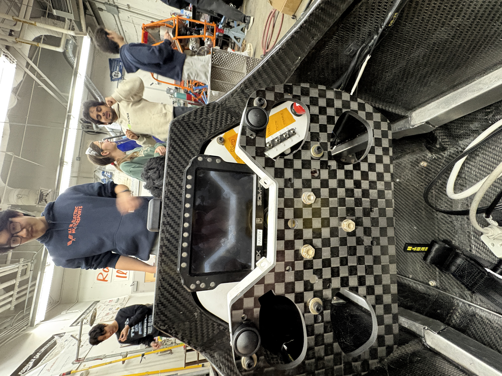
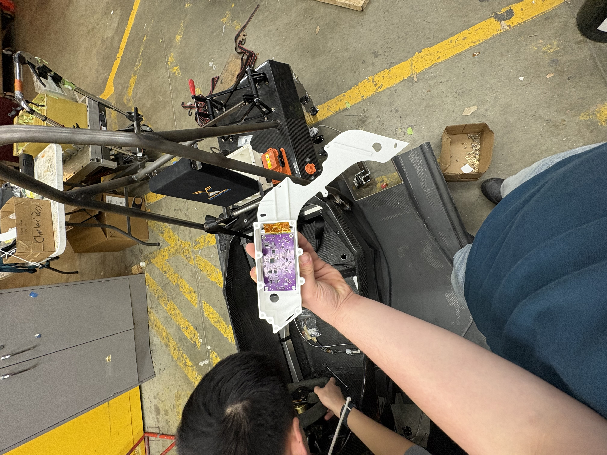
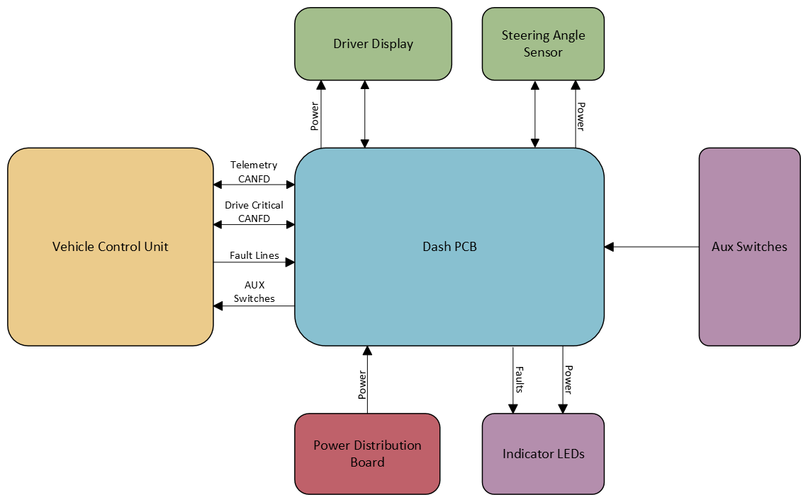
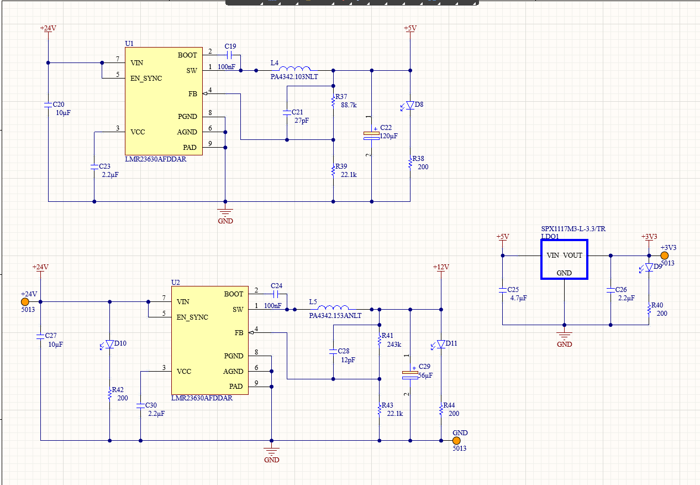
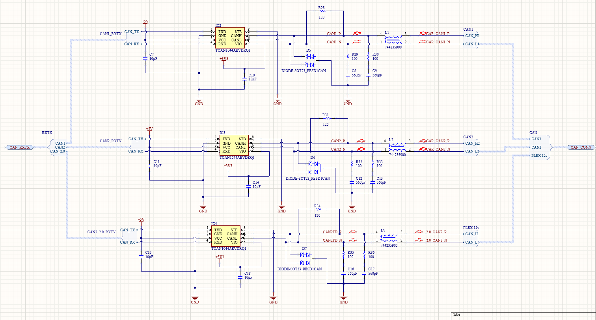
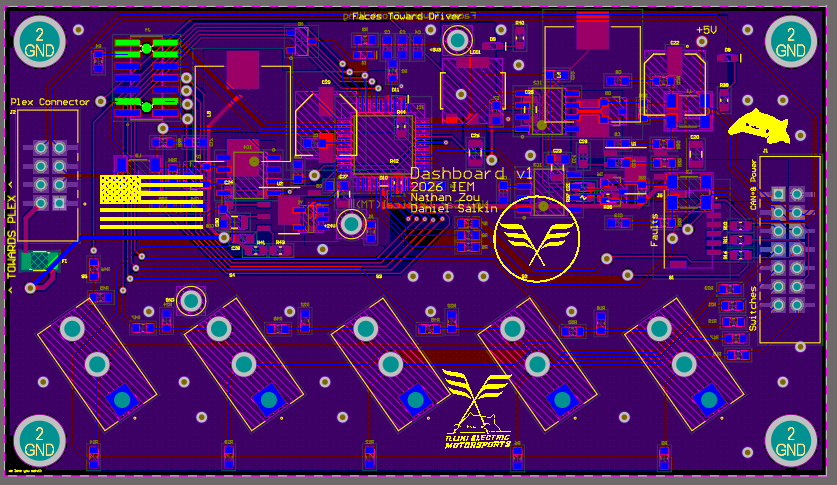

Dash PCB
Power and communication
for the driver’s display.
The PLEX driver display needed two things the rest of our car could not provide directly: a 12 V supply and a Classical CAN (CAN 2.0) connection. Our telemetry network uses CAN FD, so the display could not simply be connected to that bus.
The Dash PCB supplies the PLEX with 12 V and acts as a CAN gateway between the CAN FD telemetry bus and the display’s CAN 2.0 bus. It also interfaces with the auxiliary switches for car on, cooling on, TV, TC, and regenerative braking.

Power, a CAN gateway, and cockpit controls
Bringing the PLEX into the vehicle network
The board bridges a power and communication mismatch. It provides the display’s required 12 V rail, which was not otherwise available in the car, and relays communication between the CAN FD telemetry network and the PLEX’s separate CAN 2.0 connection.
I led the hardware bring-up of the display’s power and communication interfaces, connecting the dashboard electronics with the vehicle network and driver controls.
Adapting to the steering-angle sensor
Later in the year, we adapted the Dash PCB to supply power to the steering-angle sensor and connect it to a private CAN bus. The sensor was internally double-terminated, a detail absent from its datasheet.
Giving it a dedicated bus kept that unexpected termination from affecting the shared vehicle network. The change made the dashboard an integration point for both the driver display and steering-angle sensing.


System architecture
The system diagram shows how the Dash PCB connects the driver display, vehicle control unit, steering-angle sensor, auxiliary switches, indicator LEDs, and power distribution board. Separate CAN connections let the board serve the display and sensor without imposing their interface requirements on the telemetry bus.

Generating the required power rails
The power sheet shows two buck-converter stages taking the vehicle’s 24 V supply down to 12 V and 5 V. The 12 V rail powers the PLEX, while a separate regulator derives 3.3 V from 5 V for the control electronics. Feedback networks set the converter outputs, with local decoupling and indicator LEDs supporting bring-up.
Keeping the CAN networks separate
The STM32G484 connects to three CAN transceiver channels. Those separate physical interfaces support the gateway between the telemetry and PLEX buses, along with the private sensor bus. The transceiver sheet also shows termination, transient protection, and common-mode chokes at the bus connections.
Reading the auxiliary controls
Five switch inputs carry the driver’s car-on, cooling, TV, TC, and regen selections into the board. The switch sheet defines each input’s high and low connections and resistor network, giving the microcontroller a defined electrical interface for the cockpit controls.
Coordinating the board
The microcontroller sheet brings the CAN channels, five switch signals, and fault inputs together. It also exposes programming and debug connections, making the controller accessible during hardware bring-up and firmware integration.


Integration
The design was constrained by cockpit packaging and controls integration requirements. Working with the drivers and ergonomics engineers, I redesigned and re-routed the board to fit the dashboard assembly, accommodate the driver controls, and meet the available space constraints.
The redesign reduced the board footprint by 23% compared with version 1.0 while retaining the power, communication, and switch interfaces the car needed.

than version 1.0